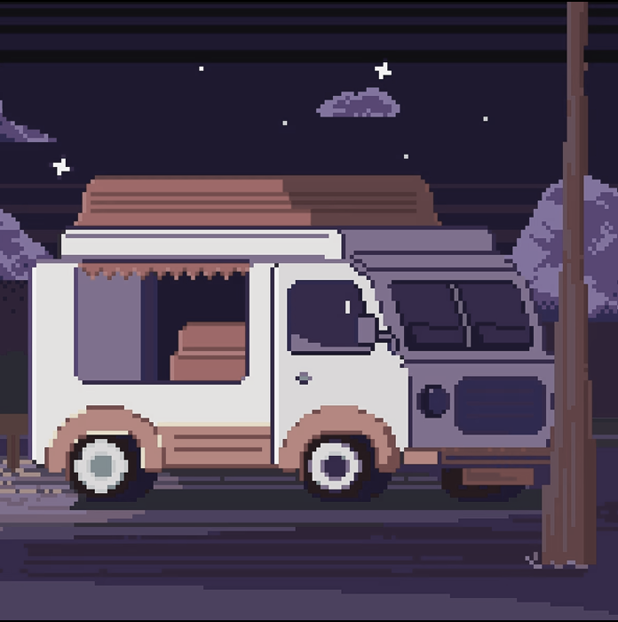
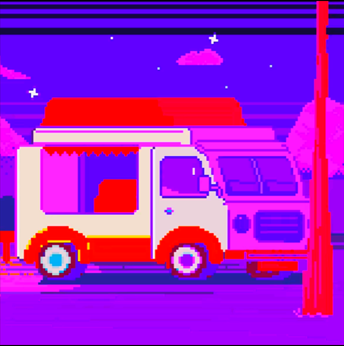
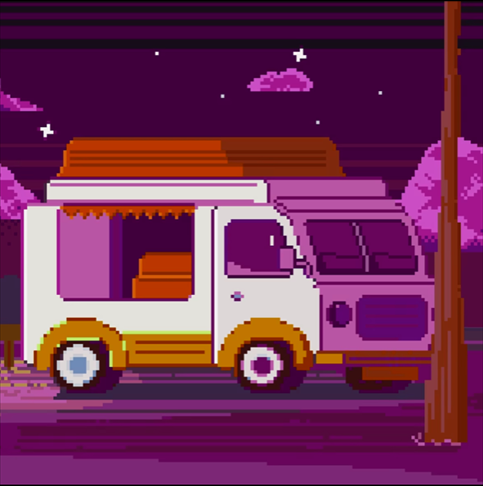
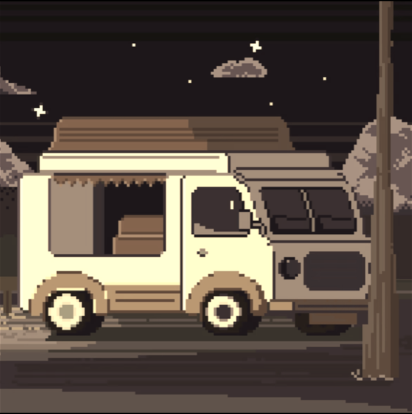
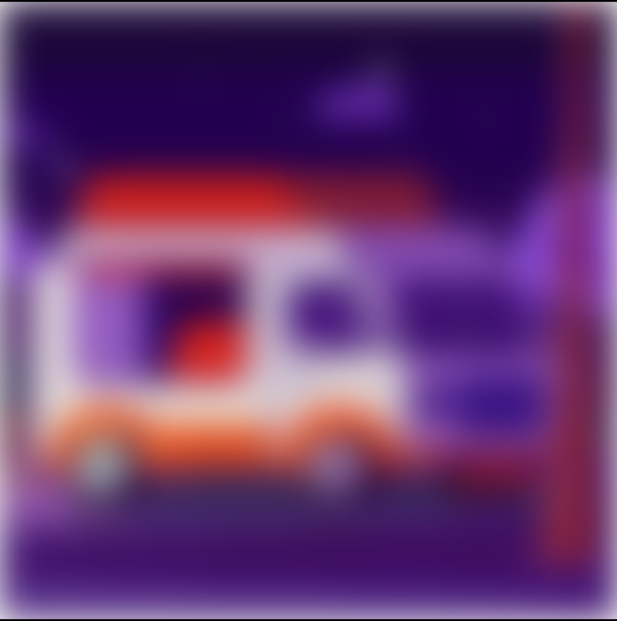
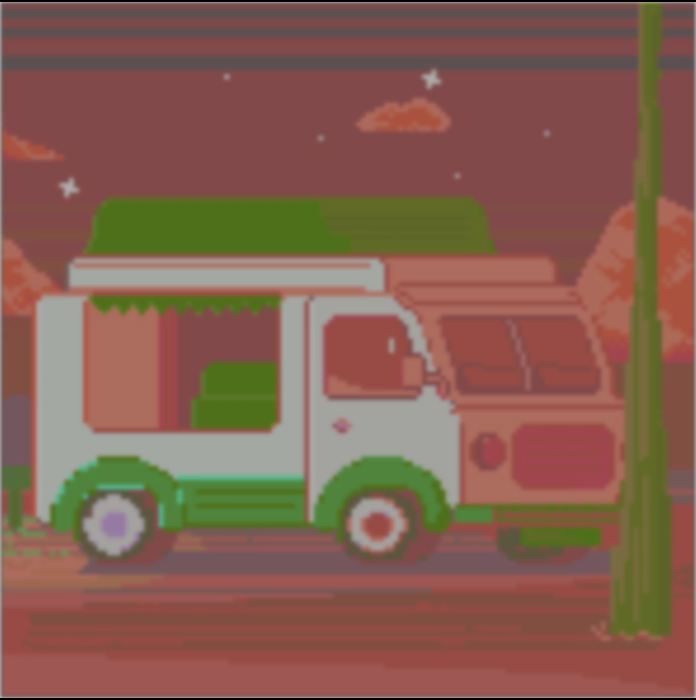

-
Фритрек и нулевой спринт: Подготовка к работе
 </HTML>
</HTML>
Это было самое начало пути. На этом этапе важно было проникнуться основами и настроиться на учёбу. И, возможно, подумать, как новые знания могут повлиять на ваше будущее.
Тут я решил, что это самое приятное программирование ever.
-
1 спринт: Я — чистый лист
 </HTML>На первых этапах мы работали со страхами и сомнениями, которые часто испытывают новички. Один из них — страх перед чистым листом. Это, конечно же, намного сложнее, чем боязнь куска бумаги. Часто за этим ощущением скрываются более глубокие вопросы: с чего начать? а вдруг будет слишком сложно? что, если я не справлюсь?
Было довольно увлекательное путешествие :-
-
1 спринт: А если не получится?
 </HTML>Первый проект — позади! Но это всё ещё самое начало пути. Радость могла быстро померкнуть и смениться ожиданием провала. Или вы, наоборот, могли вдохновиться успехами и поверить в себя.
Я делал первый проект очень долго...Было тяжеловато
-
2 спринт: Погоня за идеалом
 </HTML>На этом этапе вы уже достаточно разбирались в основах вёрстки, чтобы понять, как много ещё впереди. Вы могли попытаться погнаться за идеалом и понять, что он недостижим. А, может, вы вовсе и не подвержены перфекционизму и вместо того, чтобы сделать идеально, старались просто сделать.
Один из самых информативно-прикольных спринтов. В то время жизнь была другой...
-
2 спринт: О тех, кто рядом
 </HTML>
</HTML>
Всё это время вы были не одиноки (хотя, возможно, иногда и чувствовали, что одни против целого мира). Вас окружали одногруппники, команда сопровождения и просто близкие люди, которым можно пожаловаться, если очередной макет просто так не поддавался. Осваивать что-то новое легче, когда рядом есть единомышленники, не правда ли?
Супер легкий проект, сделал за день, но не в срок, было обидно.
-
3 спринт: Обходные стратегии
 </HTML>На этом курсе вы постоянно решали разные задачи. В какой-то момент вам могло показаться, что решения просто иссякли. Значит, пришло время посмотреть на задачу под другим углом.
Супер тяжелый спринт: и теория, и практика, и обучение в унике. Благодаря спринту ненавижу clamp
-
3 спринт: Когда опускаются руки
 </HTML>Во время учёбы часто возникает чувство, когда не знаешь, за что хвататься. Вроде и проектную пора сдавать, и задачи хочется порешать, и в теории получше разобраться, и жизнь не забыть пожить. В такие моменты очень нужна концентрация. Вспомните, откуда вы её черпали.
Не знаю что придумать (
-
«Сейчас я здесь»
 </HTML>Сейчас вы уже очень много знаете о вёрстке. Но это только начало. Во-первых, впереди ещё много материала про «красотищу». Во-вторых, с окончанием курса учёба не заканчивается. Вёрстка — это целый мир. И этот мир постоянно меняется. Познать его полностью не получится, но это тот случай, когда важен сам процесс познания. Ведь часто путь — и есть результат.
Супер интересный и крутой спринт. Под конец чутка тяжеловатая теория и обучение в унике (7 пересдач). Но зато я уже могу писать одностраничники по завышенным ценам.